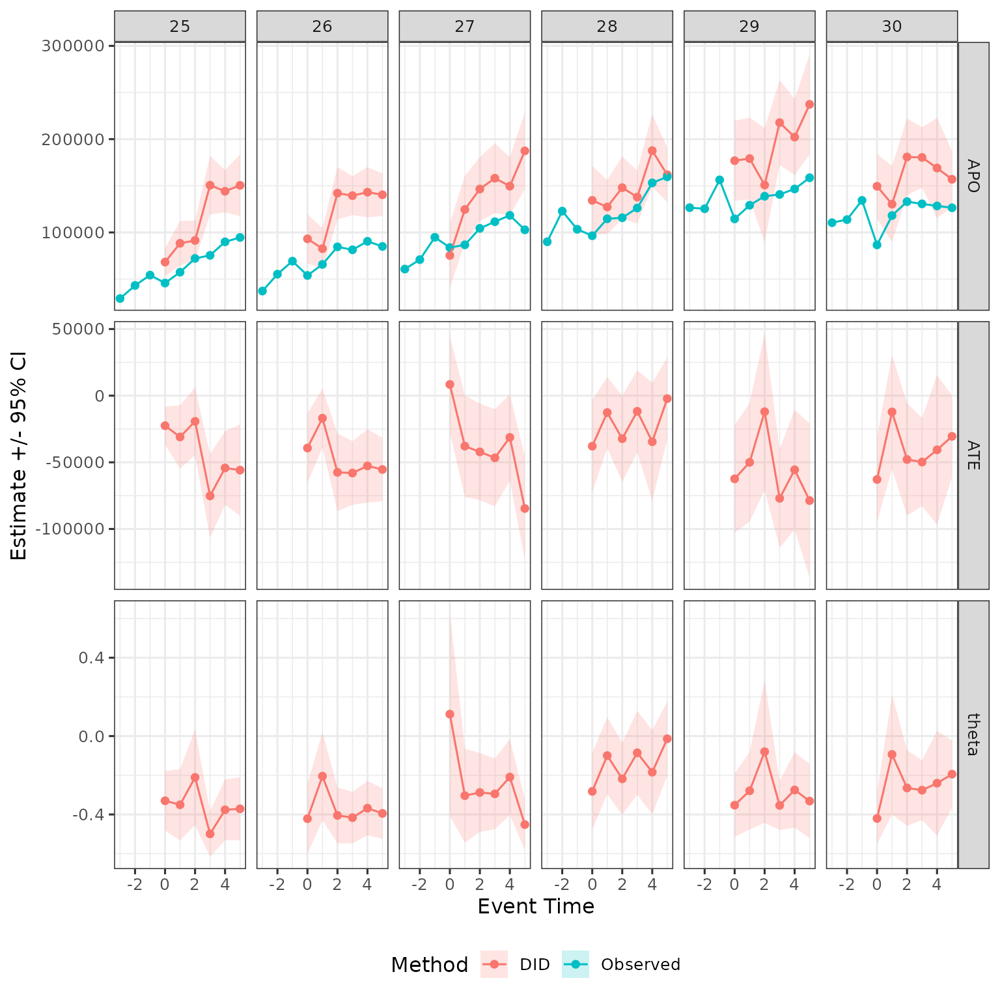
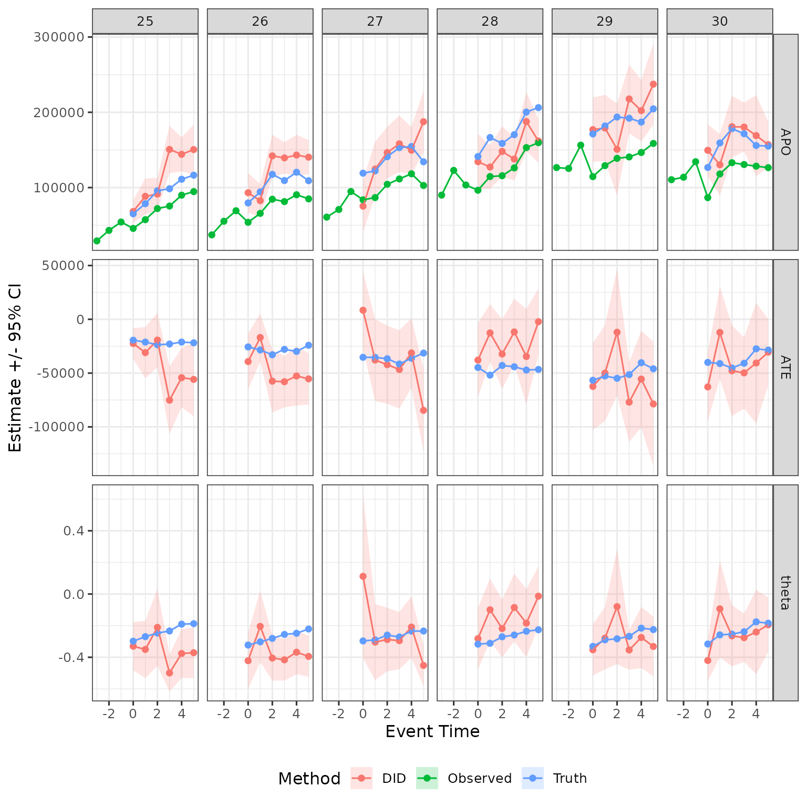
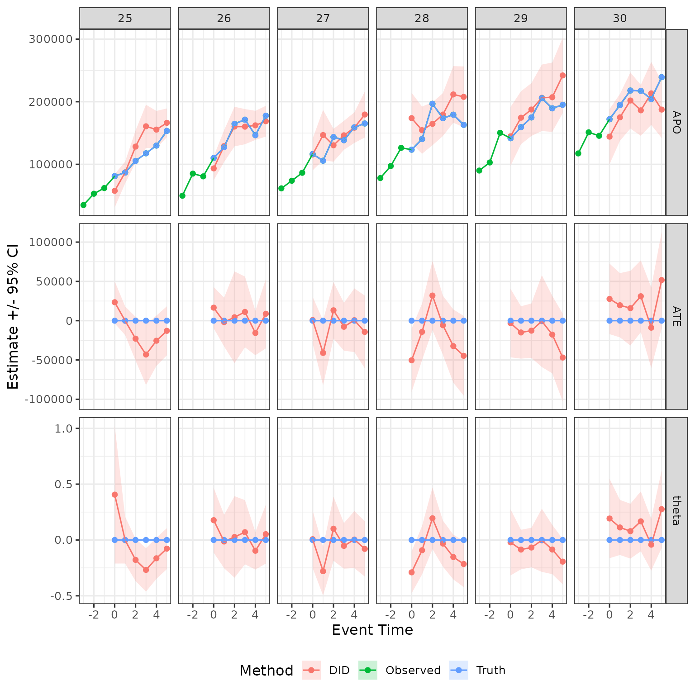

Overview
The aim of this vignette is show how to estimate difference in
differences (DID) using closest-not-yet-treated control groups using
childpen.
Simulate data
The package has a built in simulation function to draw data resembling child penalty studies.
library(childpen)
N <- 2000
data <- simulate_data(n_individuals = N)
data |> tibble()
#> # A tibble: 42,000 × 6
#> id female age D Y_inf Y
#> <int> <int> <int> <int> <dbl> <dbl>
#> 1 1 1 20 37 7337. 7337.
#> 2 1 1 21 37 10446. 10446.
#> 3 1 1 22 37 25834. 25834.
#> 4 1 1 23 37 38254. 38254.
#> 5 1 1 24 37 60609. 60609.
#> 6 1 1 25 37 46775. 46775.
#> 7 1 1 26 37 26192. 26192.
#> 8 1 1 27 37 32976. 32976.
#> 9 1 1 28 37 27096. 27096.
#> 10 1 1 29 37 75304. 75304.
#> # ℹ 41,990 more rowsDID Estimands and Estimators
DIDs starting point is a
comparison. We consider some treatment group
(e.g., 25), and want to effects for some target age
(e.g., 30). The pre-treatment period is initially set to
(e.g., 24), but this can be changed in childpen using the
argument pre. The control group
is always set to the closest-not-yet-treated group, i.e.,
childpen automatically sets
.
For example, for target age
,
the closest group that is not yet treated is parents that had their
first child at 31.
DID calculates average potential outcomes in the counterfactual without childbirth by adding to the treatment group the trend for the control group between ages and . Let be female or male gender, the age at first childbirth, the outcome. We write the DID counterfactual average potential outcomes as The DID average treatment effect (in levels) for defined for gender and treatment group is written as Finally, in the child penalty application, many studies consider a normalized target, which divides the level effects by the estimated counterfactual. DID can calculate that via All s are descriptive estimands. Descriptive, in the sense that the do not include potential outcomes, only observable data. Estimands, in the sense that they include population expectations.
The equivalent estimators simply replace population estimands with sample means. Since all estimators are combinations of simple averages, it is easy to construct influence functions with which variances can be estimated. For more details, see the estimation appendix in the paper.
Multiple treatment group analysis
We will now do the main heavy lifting. Say you want to estimate DID
with closest-not-yet-treated control groups. This will be many
s.
childpen easily allows it using the wrapper function below,
multiple_treatment_group_analysis(). Note that the column
names of the data are the same as the default for the function, so no
need to input explicitly.
res = multiple_treatment_group_analysis(data = data,
treatment_groups = 25:30, # which treatment groups to run in the analysis
periods_post = 5, # estimate results for post periods 0:5
periods_pre = NULL, # estimate pre-trend diagnostics, set to NULL to omit from estimation
max_age = 40, # dont estimate results if age is above 40
min_age = 20, # dont estimate results if age is below 20
pre = 1, # use 1 period before treatment, can make further away if anticipation is conern
verbose = FALSE # set to TRUE to output progress (i like to time loops) set to FALSE to omit messages
) Only DID, plot post-treatment results
The above function outputs results for all estimation methods discussed in the paper. Let save only DID results, and graph them. For benchmarking, I also add to the plots the mean observed earnings from the raw data.
obs_tidy = data |>
mutate(event_time = age - D) |>
rename(d = D) |>
group_by(female, d, event_time) |>
summarize(est = mean(Y)) |>
mutate(estimand = "APO", method = "Observed") |>
filter(event_time %in% -3:5, d %in% 25:30)
plot_data = res |>
filter(method %in% c("DID_Female", "DID_Male")) |>
mutate(female = ifelse(method == "DID_Female", 1, 0)) |>
select(d, event_time, estimand, female, est, ci_l, ci_h) |>
mutate(method = "DID")
plot_data = plot_data |>
dplyr::bind_rows(obs_tidy)
plot_data |>
filter(female == 1) |>
ggplot(aes(x = event_time, y = est, ymin = ci_l, ymax = ci_h, color = method, fill = method)) +
geom_ribbon(color = NA, alpha = .2) +
geom_point() + geom_line() +
facet_grid(cols = vars(d), rows = vars(estimand), scales = "free") +
labs(x = "Event Time", y = "Estimate +/- 95% CI", color = "Method", fill = "Method") +
theme(legend.position = "bottom")
Compare to real effects in the simulation
The simulation offers also potential outcomes so we can see effect: Null for fathers and 30% decline with some constant recovery for mothers.
PO_tidy = data |>
mutate(event_time = age - D) |>
rename(d = D) |>
group_by(female, d, event_time) |>
summarize(APO_obs = mean(Y), APO = mean(Y_inf)) |>
mutate(ATE = APO_obs - APO,
theta = ATE / APO) |>
filter(event_time %in% 0:5, d %in% 25:30) |>
select(-APO_obs) |>
pivot_longer(
!c(female, d, event_time), names_to = "estimand", values_to = "est"
) |>
mutate(method = "Truth")
plot_data = plot_data |>
dplyr::bind_rows(PO_tidy)
plot_data |>
filter(female == 1) |>
ggplot(aes(x = event_time, y = est, ymin = ci_l, ymax = ci_h, color = method, fill = method)) +
geom_ribbon(color = NA, alpha = .2) +
geom_point() + geom_line() +
facet_grid(cols = vars(d), rows = vars(estimand), scales = "free") +
labs(x = "Event Time", y = "Estimate +/- 95% CI", color = "Method", fill = "Method") +
theme(legend.position = "bottom")
The intuition for this result, discussed in the paper, is that later treatment groups are positively selected compared to earlier treatment groups, and hence DID is overstating treatment effects for those groups.
For completness, show for men as well
plot_data |>
filter(female == 0) |>
ggplot(aes(x = event_time, y = est, ymin = ci_l, ymax = ci_h, color = method, fill = method)) +
geom_ribbon(color = NA, alpha = .2) +
geom_point() + geom_line() +
facet_grid(cols = vars(d), rows = vars(estimand), scales = "free") +
labs(x = "Event Time", y = "Estimate +/- 95% CI", color = "Method", fill = "Method") +
theme(legend.position = "bottom")